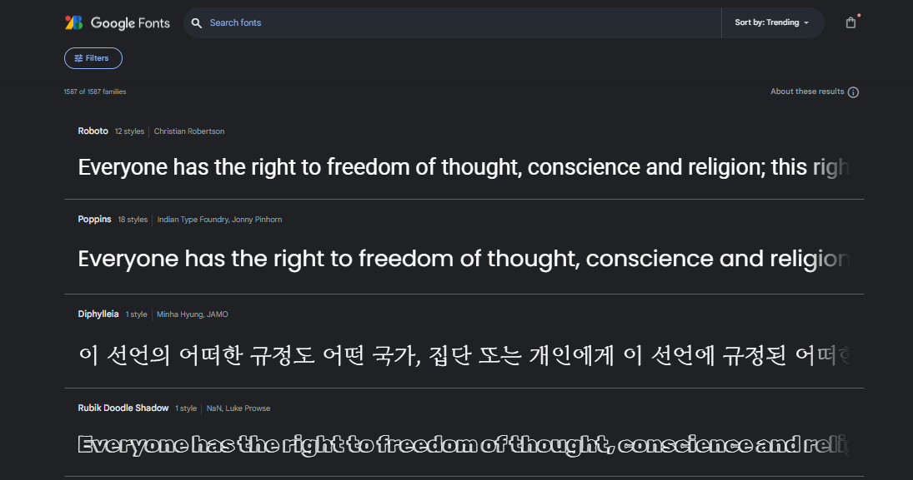

Introduction to Google Fonts
Google Fonts is a versatile and user-friendly resource that has revolutionized web typography. Offering a vast collection of high-quality, open-source fonts, Google Fonts empowers web developers and designers to enhance the visual appeal and readability of their projects. With an extensive library featuring diverse typefaces, from classic serifs to modern sans-serifs, Google Fonts caters to a wide range of design preferences. The platform seamlessly integrates into web development workflows, allowing users to easily embed selected fonts into their websites through a straightforward implementation process. Google Fonts not only provides a valuable solution for improving aesthetics but also contributes to the overall accessibility and user experience of online content. Its commitment to open-source principles makes it a go-to choice for web creators seeking a rich array of fonts without compromising on performance or licensing constraints.